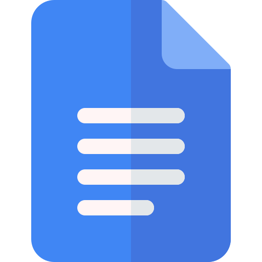
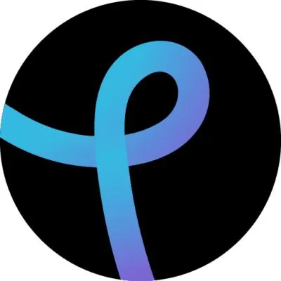

APLICACIONES WEB MÁS FAMOSAS
Google Docs

Fecha de lanzamiento
17 de septiembre de 2007.
Empresa encargada de su desarrollo
Google
Descripción de la característica más atractiva/novedosa de la app
El set de ofimática de Google es una de las mejores webs apps. Gracias a Google Docs podemos crear documentos y guardarlos en nuestro ordenador o nuestra cuenta de Google Drive. Podremos trabajar con esta herramienta sin conexión a internet y cuando se conecte a la red se guardará de forma automática.
Entre sus tecnologías y herramientas que cuenta son:
- Procesador de textos que permite la redacción y edición de documentos.
- Puede usarse desde la computadora o desde dispositivos electrónicos como celulares o tabletas, a través del navegador o de la aplicación.
- Todos los documentos creados se almacenan automáticamente en Google Drive (servicio de alojamiento online de Google) y pueden ser descargados a la computadora o dispositivo.
- Permite ahorrar gran cantidad de espacio en la computadora, debido a que no almacena información dentro de la memoria del ordenador.
- Permite que uno o más usuarios trabajen sobre un mismo documento.
- Se actualiza de forma automática y con frecuencia para mejorar funcionalidades.
Para más información puedes acceder a Google Docs
Facebook
Fecha de lanzamiento
4 de Febrero de 2004.
Empresa encargada de su desarrollo
Lo que ahora se conoce como META.
Descripción de la característica más atractiva/novedosa de la app
Tal y como viene trabajando en los últimos años, Facebook está invirtiendo para hacer que sea más fácil y accesible crear y compartir vídeos, incluida la capacidad de transmitir en vivo en 4K, así como para incluir nuevas funciones de edición.
Por otra parte, Facebook sigue incrementando la presencia de inteligencia artificial (IA) en la plataforma. Ya se utiliza la IA para personalizar la experiencia de los usuarios, optimizar el contenido y filtrar spam o contenido inapropiado.
La IA también se está integrando en los servicios de Messenger de Facebook para proporcionar chatbots y funciones automatizadas de atención al cliente. El uso de la IA por parte de Facebook mejora la experiencia del usuario y adapta el contenido a las preferencias individuales del usuario.
Entre sus tecnologías y herramientas que cuenta son:
- Facebook Insights: Es la herramienta nativa de Facebook con la que puedes ver las estadísticas de tu FanPage. Con ella, tendrás información muy valiosa sobre las visitas, el número total de “Me gusta”, la progresión de tu página, la procedencia de los “Me gusta”, el alcance de las publicaciones y el contenido ignorado o compartido.
- Social Status: La herramienta más poderosa para elaborar informes de Facebook que hemos utilizado. Combina 4 herramientas de análisis de redes sociales en 1 plataforma. Además de proporcionar métricas detalladas para las páginas de Facebook, Profile Analytics es compatible con Instagram, Instagram Stories, YouTube, Twitter y LinkedIn.
- Facebook Audience Insights: Se utiliza para descubrir tendencias y datos sobre los diferentes públicos de Facebook. Al seleccionar atributos en el panel lateral izquierdo, puedes filtrar diferentes audiencias de Facebook y analizar su demografía, intereses y comportamientos.
- Hootsuite: Puedes crear fácilmente artículos atrayentes con la ayuda de las bibliotecas de recursos de Hootsuite, metraje e imágenes de archivo ("stock media"), edición de imágenes y funciones de publicación de vídeos que ajustan automáticamente el ancho de banda, la altura y el ancho para que se ajusten a los requisitos de cada red.
Para más información puedes acceder a Facebook
Whatsapp Web
Con una fecha de lanzamiento en Agosto de 2015.
La empresa encargada de este proyecto fue lo que ahora se conoce como META.
Entre sus novedades encontramos:
WhatsApp ha empezado a implementar la posibilidad de compartir Estados en su versión web, una función efímera que hasta ahora solo estaba disponible en la versión para móviles. Esta novedad permite a los usuarios compartir actualizaciones de texto, foto, vídeo y GIF con una duración de 24 horas desde la web.
Entre sus tecnologías y herramientas que cuenta son:
- Te permite enviar archivos pesados que pueden verse limitados en el móvil por el espacio disponible que tengas
- Si ya tienes iniciada la sesión en el ordenador y nunca la has finalizado, podrás acceder a WhatsApp Web sin necesidad de tener el móvil al alcance siempre y cuando este tenga conexión a internet, sea a través de datos o wifi
- Integración con herramientas de trabajo, como Google Chrome, permitiendo una sincronización eficiente con otras aplicaciones y facilitando su uso en ambientes laborales. Esto mejora la productividad y la comunicación en el entorno profesional.
Para más información puedes acceder a Whatsapp Web
Pixlr

Con una fecha de lanzamiento a finales del verano de 2008.
Esta herramienta fue desarrollada por Ola Sevandersson.
Entre sus novedades encontramos:
Las herramientas impulsadas por IA de Pixlr revolucionan la edición de fotos y diseño al combinar de manera perfecta la creatividad con la eficiencia, transformando el futuro de la creación de contenido visual en una experiencia intuitiva e innovadora. La edición de fotos impulsada por IA asombra con su capacidad para mejorar, manipular y refinar imágenes de manera inteligente, empujando los límites de lo que es creativamente posible de formas asombrosas, convirtiendo a Pixlr en un líder en la formación del futuro de la artesanía visual digital.
Entre sus tecnologías y herramientas que cuenta son:
- Pixlr Editor: Es la herramienta más completa de Pixlr, comparable a Photoshop en muchas de sus funciones.
- Pixlr Express: Se enfoca en ediciones rápidas y profesionales con la ayuda de la inteligencia artificial.
- Pixlr Designer: Está diseñado para crear diseños gráficos y animaciones.
- Remove bg: Se especializa en eliminar fondos de imágenes de forma automática.
Para más información puedes acceder a Pixlr
Amazon
Con una fecha de lanzamiento el 5 de Julio de 1994
Esta herramienta fue desarrollada por Jeff Bezos.
Entre sus caracteristicas encontramos:
La aplicación web de Amazon destaca por su facilidad de uso, amplio catálogo de productos, proceso de compra sencillo y excelente servicio al cliente. Estas características, combinadas con la constante innovación de la empresa, hacen de Amazon una de las plataformas de comercio electrónico más populares del mundo, con su integración de Amazon Prime, Amazon Echo y aplicación móvil ha impulsado su crecimiento de forma impresionante.
Entre sus tecnologías y herramientas que cuenta son:
- Inteligencia Artificial (IA) y Machine Learning: Amazon utiliza la IA para personalizar recomendaciones de productos, optimizar la logística, mejorar la búsqueda y desarrollar asistentes virtuales como Alexa.
- Cloud Computing (AWS): Amazon Web Services es uno de los proveedores de servicios en la nube más grandes del mundo. Amazon utiliza su propia infraestructura en la nube para potenciar sus operaciones y ofrecer servicios a terceros.
- Robótica y Automatización: En sus centros de distribución, Amazon utiliza robots para automatizar tareas como el empaquetado y el envío de productos.
- Internet de las Cosas (IoT): Amazon ha desarrollado dispositivos como Echo y otros dispositivos inteligentes que permiten a los usuarios controlar diversos aspectos de sus hogares a través de comandos de voz.
Para más información puedes acceder a Amazon